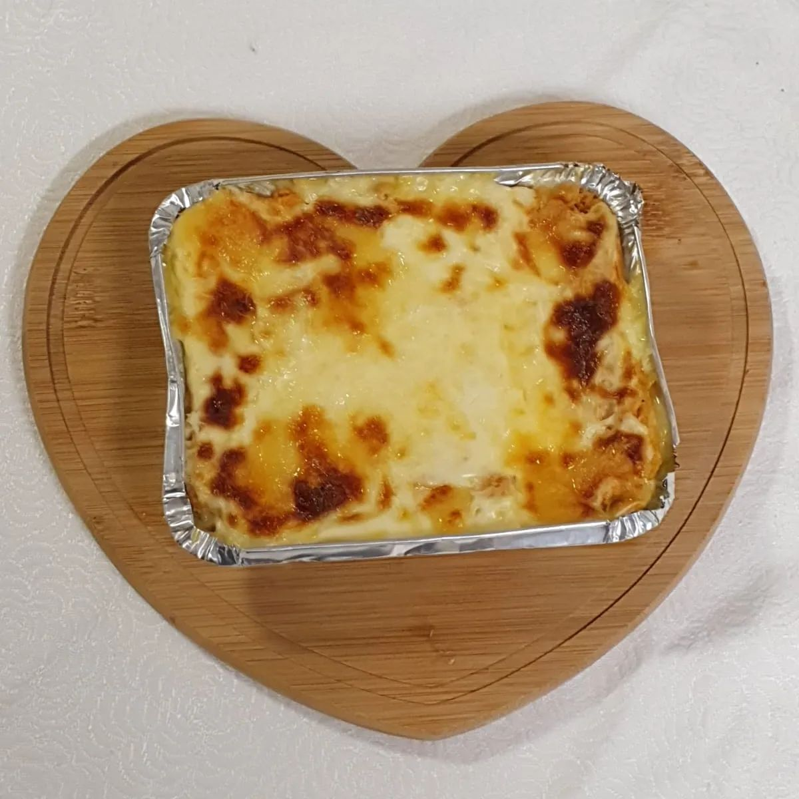
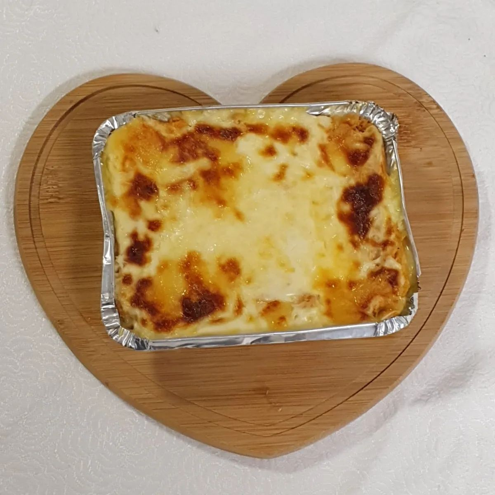
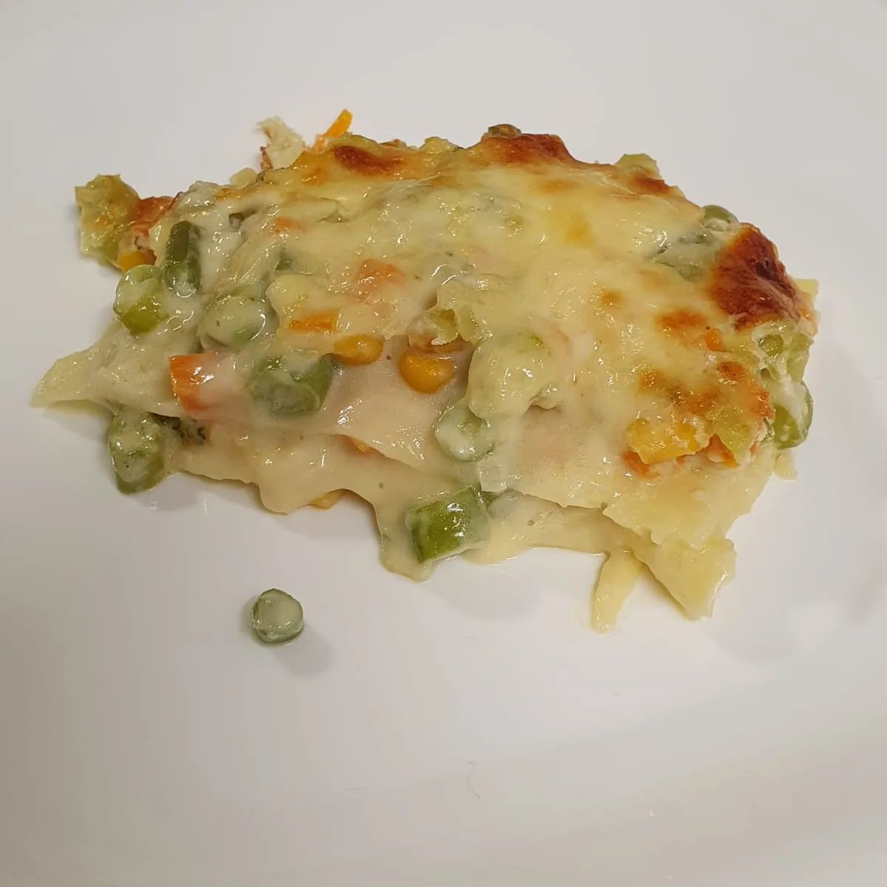
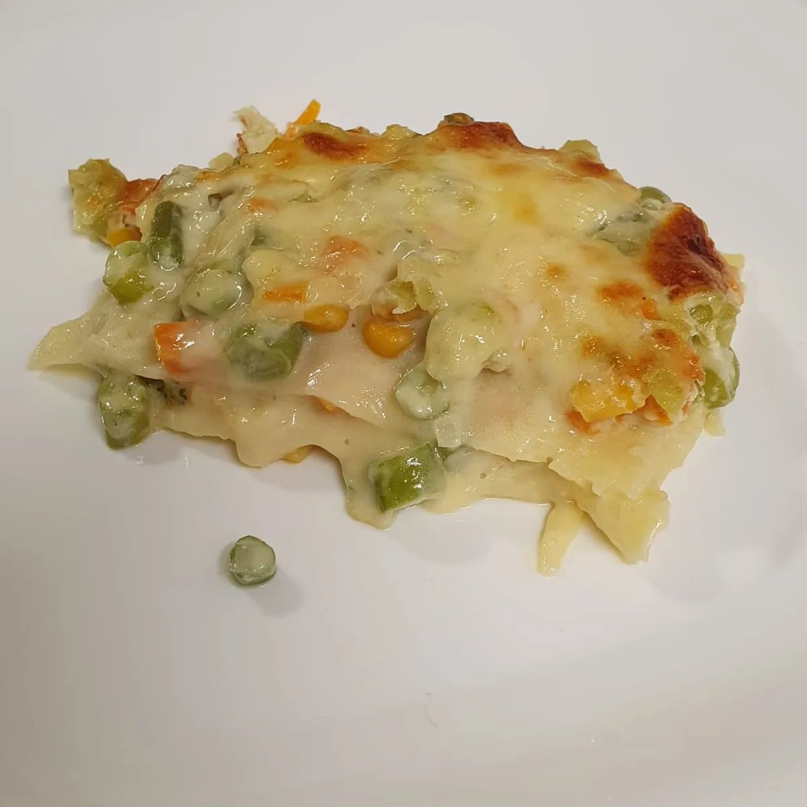
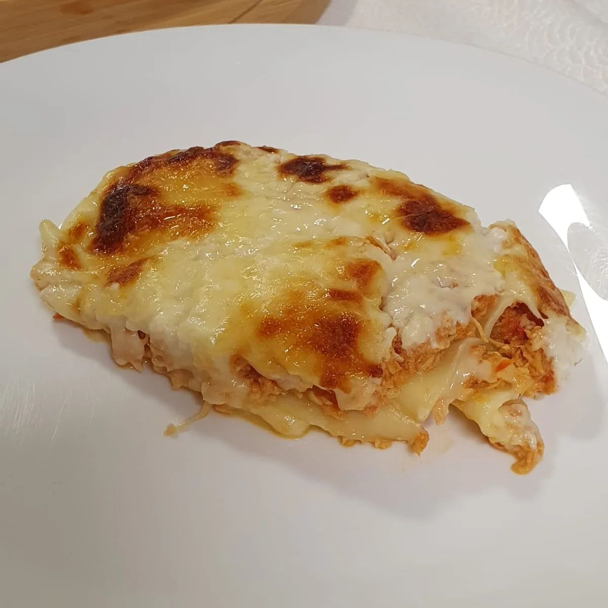
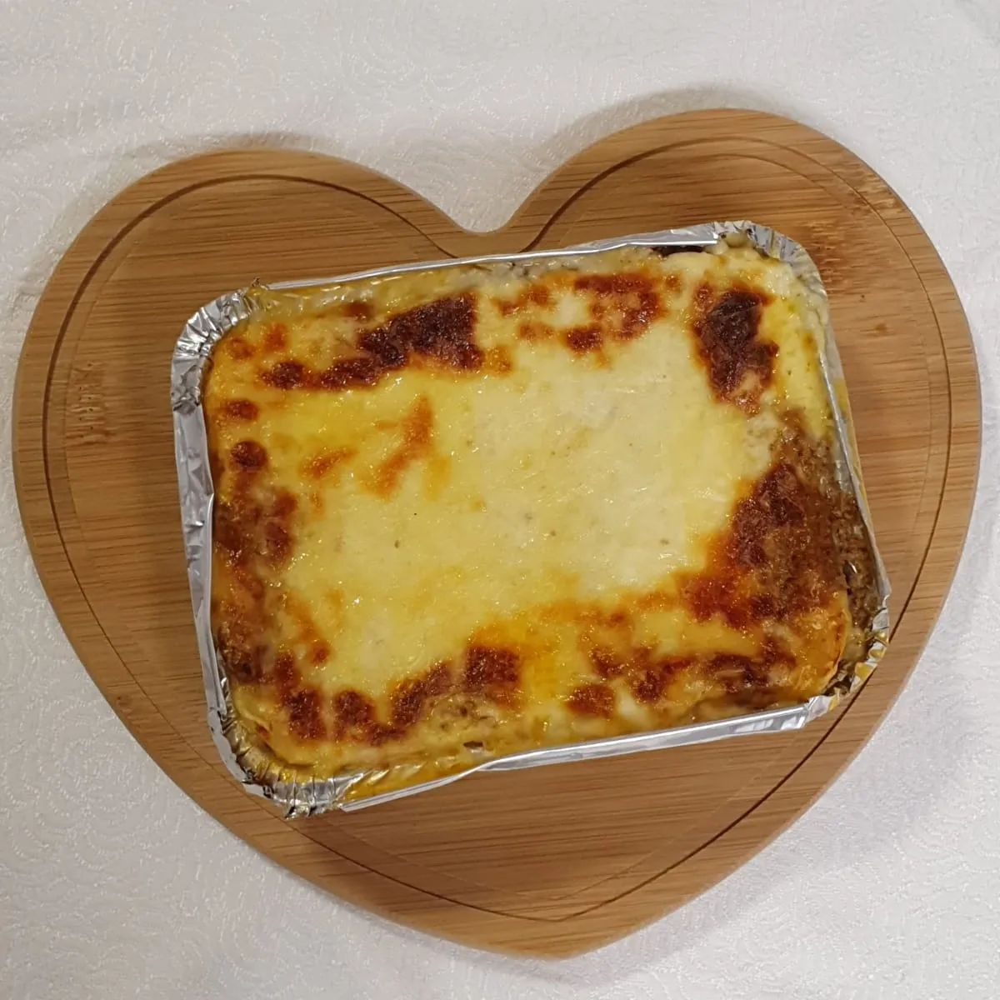

Nossos Produtos
Lasanha De Frango
 

Nossa lasanha clássica é preparada com massa fresca, molho de tomate caseiro, queijos deliciosos e delicioso peito de frango. Cada camada é uma explosão de sabor que vai te deixar com água na boca!
Lasanha Vegetariana
 

Para os amantes de vegetais, oferecemos uma lasanha vegetariana feita com uma seleção de legumes frescos, queijos derretidos e um toque de ervas aromáticas. É uma opção saudável e saborosa para todos apreciarem!
Lasanha Bolonhesa
 Massa fresca, molho de carne suculento e queijos derretidos. Uma combinação perfeita de sabores que derretem na boca. Uma explosão de prazer gastronômico em cada garfada!